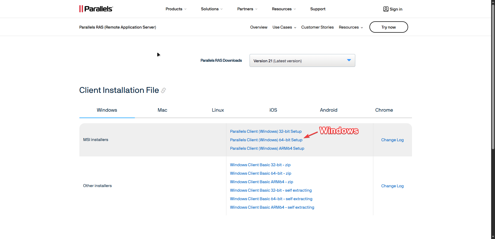
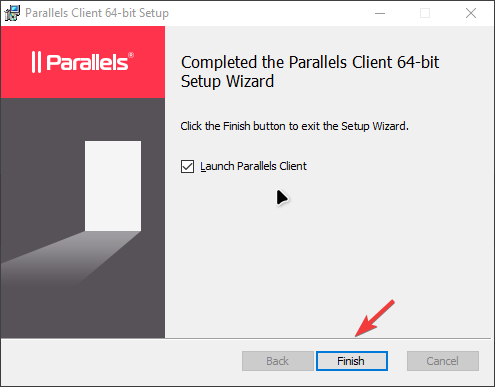
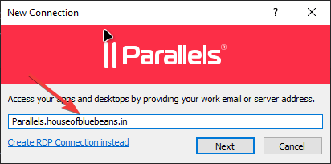
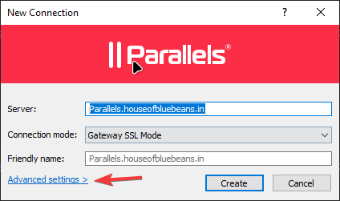
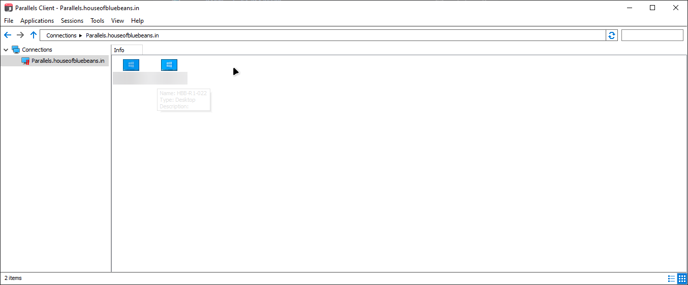

Once your IT onboarding is complete, you will be assigned a dedicated office PC. Using Parallels RAS Client, you can securely connect to that PC from your home computer — just as if you were sitting at your desk in the office.
This guide walks you through downloading, installing, and connecting in under 10 minutes. No technical experience is needed.
Before you start: Make sure you have your username and password provided by IT, and your office PC name (e.g. HBB-R1-022). These are sent to you during onboarding.
On your home computer, open a web browser and go to the Parallels RAS download page:
Link: https://www.parallels.com/products/ras/download/client/

Once the download is complete, open the installer file and follow the setup wizard:
C:\Program Files\Parallels\Client\) and click Next.
Parallels Client will open automatically after installation. A New Connection dialog will appear.
Parallels.houseofbluebeans.in
On the next screen you will see the server and connection mode. Click Advanced settings > at the bottom left — the Connection Properties window will open. It has two sections to fill in:
Connection settings (top section):
Parallels.houseofbluebeans.in — leave it as is.443, change it to 4443.Log in (bottom section):
hobb.com.Once all fields are filled, click OK, then click Create.

💡 Important: The port must be4443and the domain must behobb.com— the connection will fail without these. If you have forgotten your username or password, contact IT directly.
After logging in, you will see a screen showing the desktops available to you. Your assigned office PC will appear here by name (e.g. HBB-R1-022).

💡 Tip: Your connection is saved — next time you open Parallels Client, just double-click your PC straight away. You do not need to re-enter the server or port.
If you need any software installed on your office PC — such as a specific application for your work — you must raise a support ticket with IT. Do not attempt to install software yourself.
Follow the guide here: How to Raise an IT Support Ticket →
Parallels.houseofbluebeans.in and the port is 4443.hobb.com. Contact IT to reset your credentials if needed.Parallels.houseofbluebeans.in listed under Connections and select Connection Properties… from the menu. This opens the same dialog — update the port to 4443, fill in your username, password, and domain (hobb.com), then click OK and try connecting again.